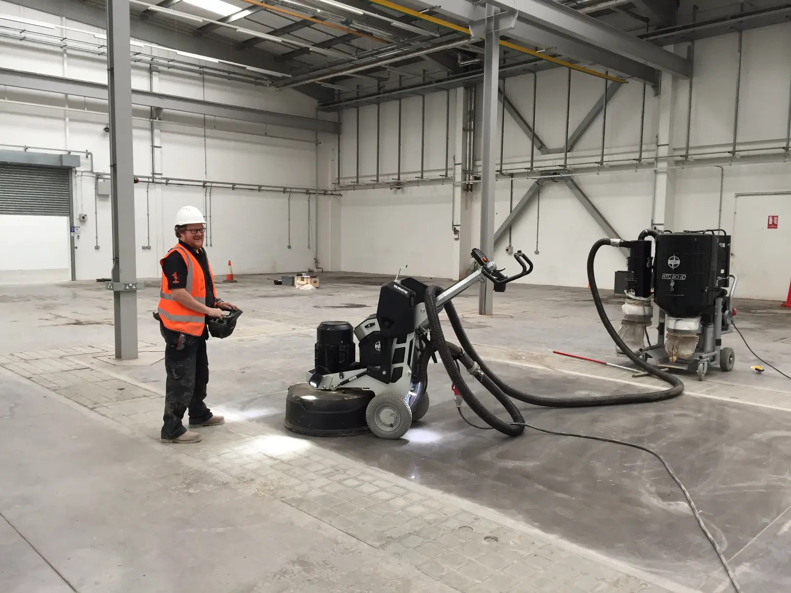

コア削孔以外も含めた、現場用品の選び方を整理します。
室内で新品の棚板を加工する前に、養生と集じんを試す
対象は材質が分かる新品の木材の少量加工。工具と木粉に対応する集じん機、指定ホースと接続口、床の保護材、保護眼鏡などを、各機器の説明書に合わせてそろえます。古い壁や床材の解体はこの手順の対象外です。
- 作業台から片付け口まで決める
他の人が通らない区画を取り、棚板を固定できる台を用意します。扉の開閉、通風、避難経路を保ち、ホースやコードが足元を横切らないよう仮置きします。
- 床に合う養生を試す
塗装面やワックス面に貼れるテープか確認し、目立たない所で試します。床材が粘着に弱ければ、端をシート同士で留めるなど床に貼らない方法を選び、足元がめくれないか見ます。
- 工具を止めて接続を合わせる
電源を切り、ホースの口径、アダプター、木粉用フィルターと袋を説明書に合わせます。接続の抜けやホースの折れがないか、工具を動かさずに作業範囲をなぞって確かめます。
- 端材で集じんを確認する
説明書どおりに集じん機と工具を使って、同じ材の端で短く試します。粉が周りに広がるときは中断。終了後は機器を止め、袋の交換方法に従い、シートは粉のついた面を内側にして片付けます。
仕上がりの確認と、つまずいたときの直し方
- 仕上がり
- 切りくずのたまりが台の背面や隣室に広がらず、片付け時にも飛散しない状態。木粉の作業で水を吸う設定や火花の出る作業を兼用しません。
- 吸い込みが弱いとき
- 電源を切ってから、ホースの曲がり、袋の満杯、フィルターの詰まり、継ぎ手の抜けを順に確認します。材質が不明な既存建材は試し削りもしません。
参考資料 環境省の既存建材の石綿に関する案内
1．集じん機は吸引力だけで選ばない
機種を比較する際は、工具との接続、対象粉じんに応じた集じん性能、フィルター清掃・交換、ホースの取り回し、電源容量、騒音を確認します。粉じんが健康や火災リスクに関わる作業では、法令や安全衛生管理に適合する機材・対策を優先してください。
2．湿式施工は水の管理までセット
湿式の切断・削孔は粉じんの飛散を抑える方法の一つですが、排水・スラリーや漏水の管理が必要です。階下に居室や電気設備がある場合、集水装置、漏水養生、排水の処理まで施工計画に含めます。
3．養生材は施工条件で変える
| 用品・対策 | 確認する性能 | よくある見落とし |
|---|---|---|
| 防じんシート・区画養生 | 密閉性、難燃性、施工性 | 空調・換気経路との干渉 |
| 床・壁の保護材 | 滑り、耐水、残留糊 | 搬入動線や車輪荷重 |
| 集水リング・湿式集じん | 取付条件、水量、回収性能 | 階下漏水、処理先 |
| 防音パネル・防音シート | 遮音性能、固定方法 | 換気不足や施工スペース減少 |
購入とレンタル、どちらを選ぶ？
年に数回しか使わない専用機器は、購入価格に加えて保守・保管・搬送を見積もり、レンタルと比較します。頻繁に使う消耗品・養生材は継続調達の価格と品質の安定性が重要です。
記事評価を広告対価で変更しません。
集じん機の購入で見落としやすい項目
「吸引力が強い」だけで選ばず、発生する粉じんの種類、工具との接続、必要な捕集性能、フィルター交換方法、排気の扱いを確認します。特にコンクリート等を切削して発生する微細な粉じんには、家庭用の掃除機を流用しないことが重要です。水を含む汚泥を扱う場合は、湿式対応の仕様かも確認します。
用品を4つに分けて比較
| 用品 | 比較ポイント |
|---|---|
| 工具接続型集じん機 | 粉じん種別、捕集性能、ホース径、連動機能 |
| 養生材 | 床・壁への適合、粘着残り、火気との相性 |
| 水受け・汚泥処理 | 漏水防止、受け容器容量、適正な廃棄先 |
| 保護具 | 対象作業への適合、密着・着用性、交換部品 |
消耗品の総費用も算入する
機器本体が安くても、フィルター・袋・ホースの交換費が高ければ年間費用が増えます。仕事で頻繁に使う場合は、交換部品の入手性と故障時のサポートも比較対象です。
購入かレンタルか、判断する4つの問い
- 年に何日使うか：購入価格と消耗品費を想定使用日数で割り、レンタル日額と比べる。
- 保管できるか：フィルター・ホース・付属品を清潔かつ安全に置ける場所が必要。
- 搬入できるか：車両、階段、エレベーター、電源の条件を先に確認。
- 代用品では足りないか：用途に合わない家庭用掃除機で危険な粉じんを扱わない。
粉じん対策の参考：米国NIOSHの作業環境対策（英語）。海外の一般情報であり、日本の法令・現場管理手順に代わるものではありません。
この作業に使う道具・材料
広告 Amazonの商品紹介リンクを含みます。
- 床養生用シート
歩く範囲にはずれにくい製品を。テープは床材に適合するものを別に確認します。
Amazon.co.jpで床養生用シートを探す - 集じん用アダプター
手持ちの工具と集じん機の両方の型番を確認し、対応表に載る継ぎ手を選びます。
Amazon.co.jpで集じん用アダプターを探す